Top Destinations in Central Province
Discover the signature highlights and attractions across this province.
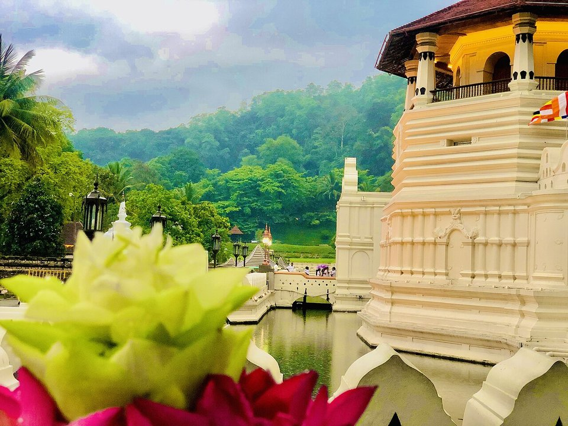
Temples & Religious SitesTemple of the Sacred Tooth Relic (Sri Dalada Maligawa)
The venerated royal palace complex in Kandy enshrining the sacred tooth relic of Gautama Buddha, the spiritual palladium of Sri Lankan kings.
Kandy Lake (Kiri Muhuda)
The artificial lake created in 1807 by King Sri Wickrama Rajasinghe in the heart of Kandy, flanked by the Walakulu Bamma cloud wall.
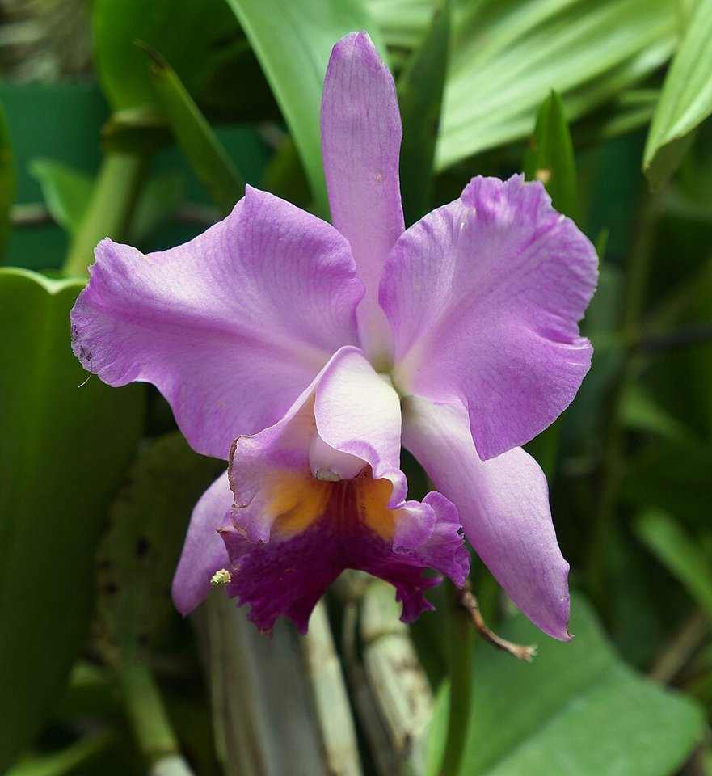
Botanical GardensRoyal Botanic Gardens Peradeniya
A world-renowned 147-acre royal botanical garden cradled in a loop of the Mahaweli River, home to over 4,000 plant species and magnificent palm avenues.
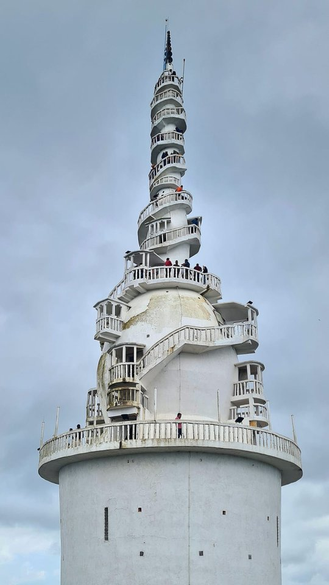
Viewpoints & PanoramasAmbuluwawa Biodiversity Complex & Tower
A multi-faith sanctuary atop an isolated mountain peak, crowned by a spiraling 48-meter cone tower with 360-degree views across central mountain ranges.
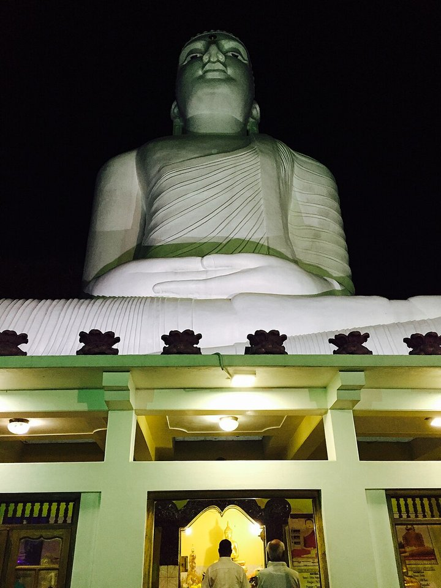
Temples & Religious SitesBahirawakanda Vihara Buddha Statue
A commanding 27-meter colossal white seated Buddha statue atop Bahirawa Kanda hill, offering panoramic views over the entire city of Kandy.
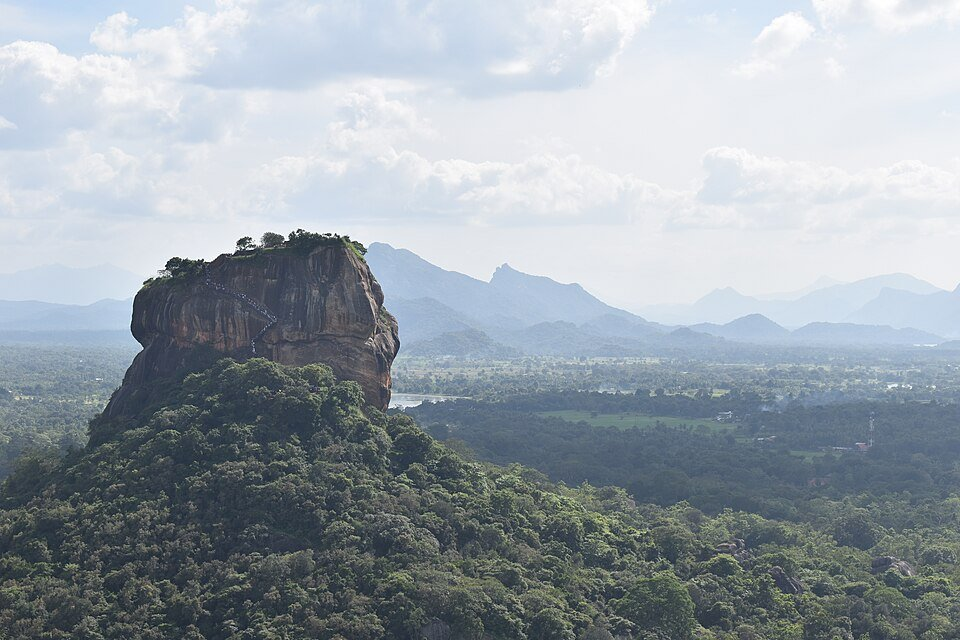
Ancient CitiesSigiriya Rock Fortress (Lion Rock)
The 5th-century royal rock citadel rising 200 meters above the jungle, featuring world-famous frescoes, mirror walls, and the colossal Lion's Paw gateway.
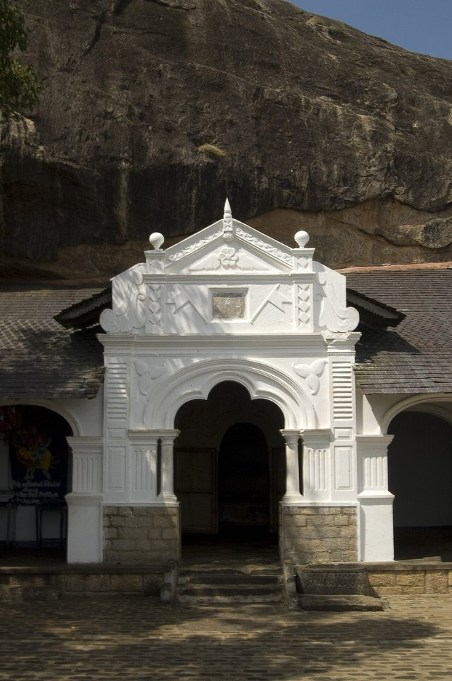
Ancient CitiesDambulla Cave Temple (Golden Temple)
The best-preserved cave temple complex in Sri Lanka, housing 153 Buddha statues and 2,100 square meters of painted ceiling murals across five sacred caves.
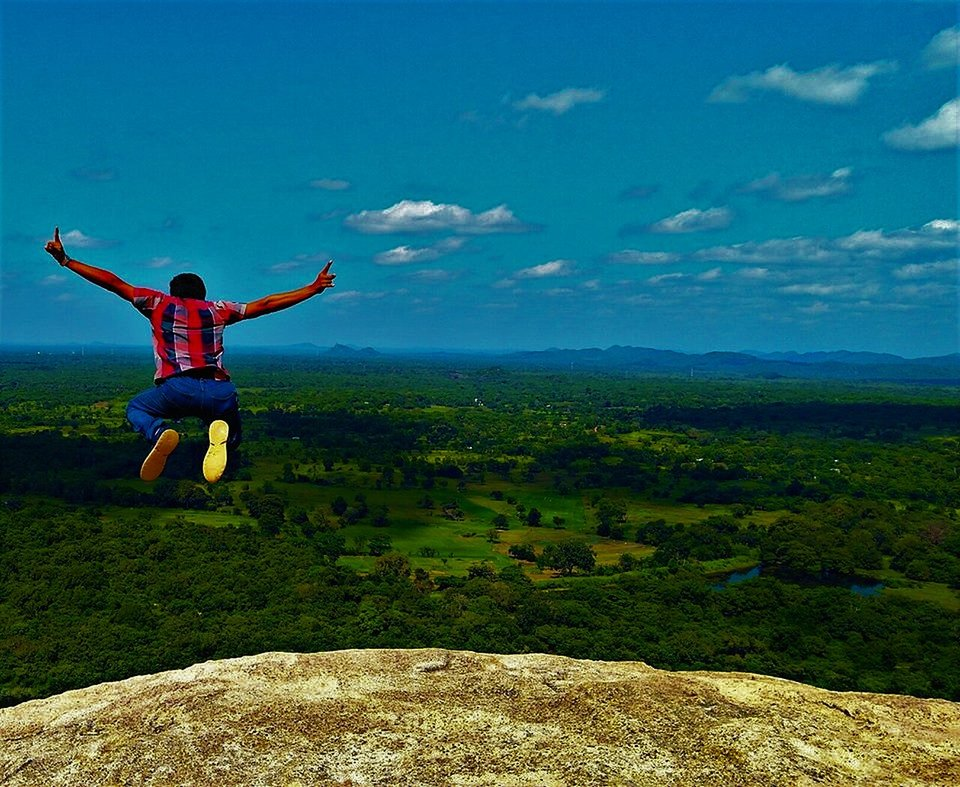
Viewpoints & PanoramasPidurangala Rock Sunrise Viewpoint
The adventurous companion rock to Sigiriya, famous for an exhilarating dawn boulder scramble, ancient cave temple, and iconic direct views of Lion Rock.
Nuwara Eliya Town & Gregory Lake
Sri Lanka's cool-climate 'Little England' at 1,868m elevation, featuring Tudor colonial post offices, tea factories, and lively watersports on Gregory Lake.
 National Parks
National Parks
Horton Plains National Park & World's End
A windswept highland plateau of cloud forests at 2,100m elevation, terminating at the staggering 880-meter vertical abyss of World's End.
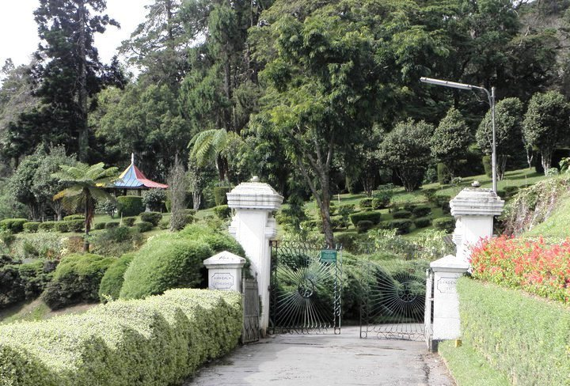
Botanical GardensHakgala Botanical Garden & Rose Terraces
The second largest botanical garden in Sri Lanka, nestled beneath the towering Hakgala rock cliff, famous for temperate roses, ferns, and Ramayana legends.
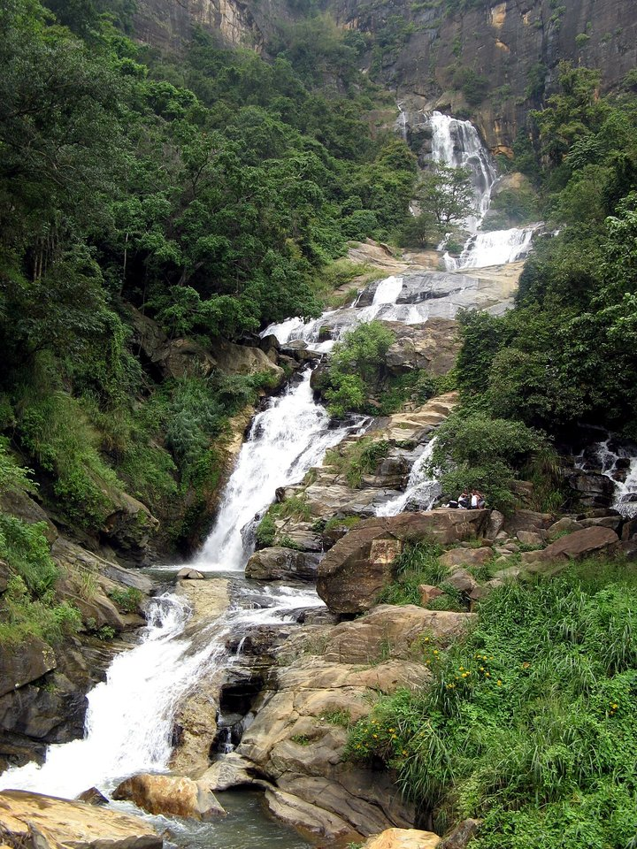
WaterfallsRamboda Falls Cascades
A thunderous 109-meter tiered cascade dropping down sheer rock faces along the scenic Kandy-Nuwara Eliya highway, the 11th highest waterfall in Sri Lanka.
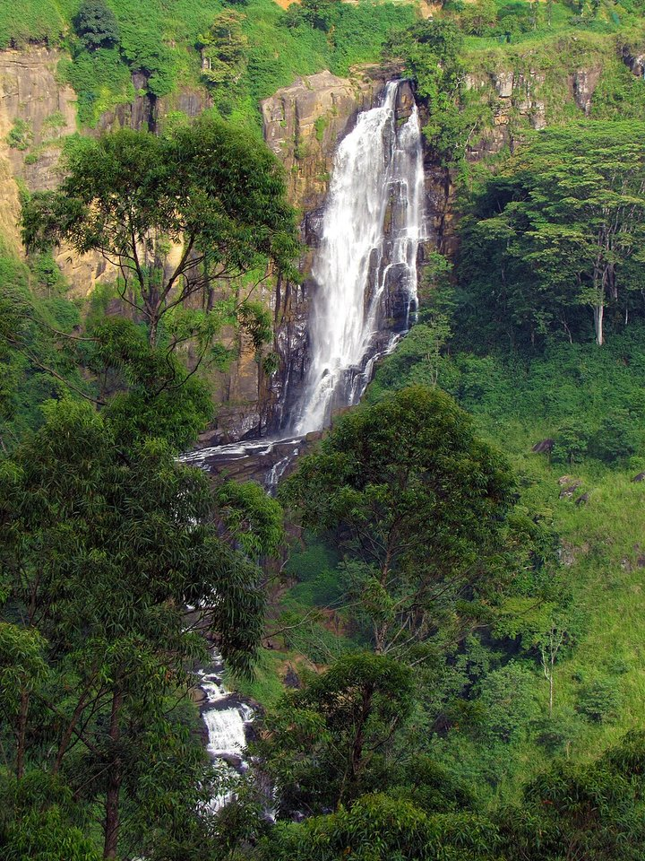
WaterfallsDevon Falls (The Veil of the Valley)
A spectacular 97-meter tiered waterfall dubbed 'The Veil of the Valley', plunging down rocky tiers amidst emerald Ceylon tea plantations.
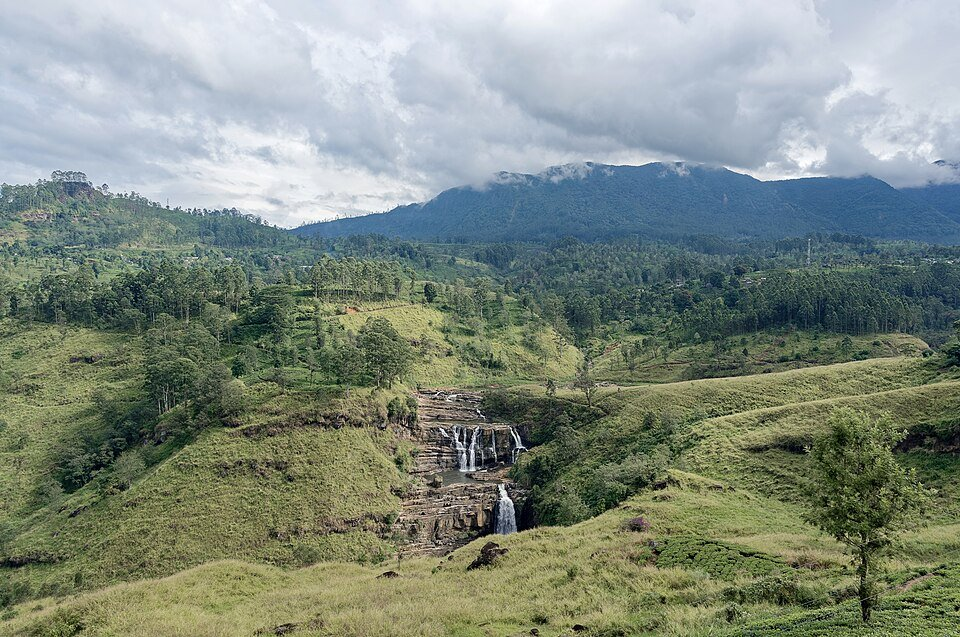
WaterfallsSt. Clair's Falls (The Little Niagara of Sri Lanka)
One of Sri Lanka's widest waterfalls, affectionately known as the 'Little Niagara of Sri Lanka', tumbling in twin cascades through lush tea hills.
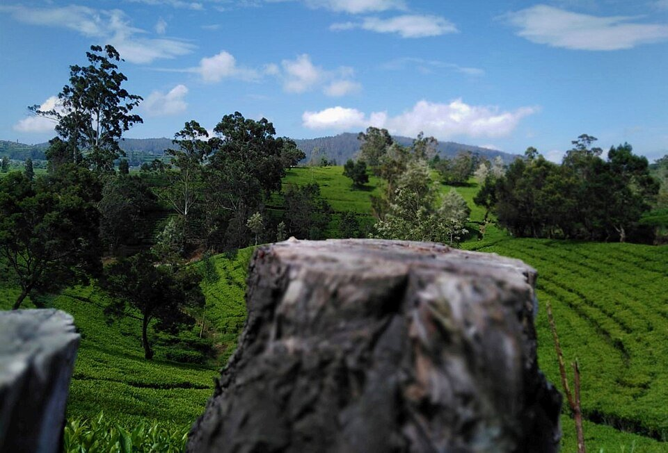
Tea Plantations & EstatesPedro Tea Estate & Factory
One of Sri Lanka's oldest operating tea factories established in 1885, where visitors can witness traditional orthodox Ceylon tea processing and sample Lovers Leap tea.